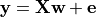
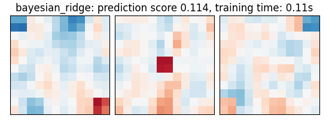
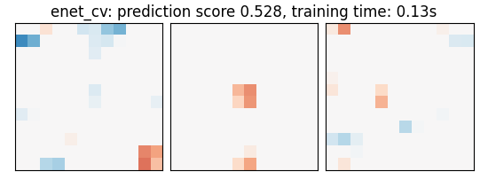
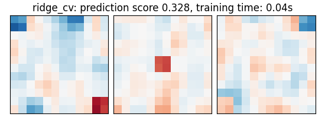
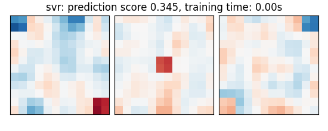
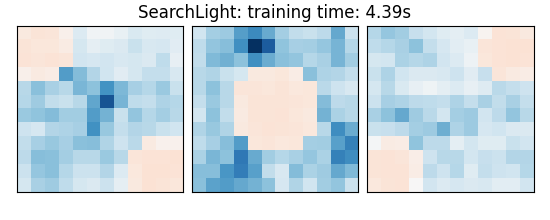
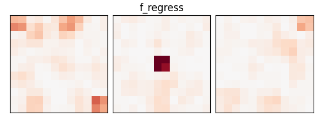

Note
Click here to download the full example code or to run this example in your browser via Binder
9.3.14. Example of pattern recognition on simulated data¶
This example simulates data according to a very simple sketch of brain imaging data and applies machine learning techniques to predict output values.
We use a very simple generating function to simulate data, as in Michel et al. 2012 , a linear model with a random design matrix X:

w: the weights of the linear model correspond to the predictive brain regions. Here, in the simulations, they form a 3D image with 5, four of which in opposite corners and one in the middle, as plotted below.
X: the design matrix corresponds to the observed fMRI data. Here we simulate random normal variables and smooth them as in Gaussian fields.
e is random normal noise.
# Licence : BSD
print(__doc__)
from time import time
import numpy as np
import matplotlib.pyplot as plt
from scipy import linalg, ndimage
from sklearn import linear_model, svm
from sklearn.utils import check_random_state
from sklearn.model_selection import KFold
from sklearn.feature_selection import f_regression
from sklearn.preprocessing import StandardScaler
from sklearn.pipeline import make_pipeline
import nibabel
from nilearn import decoding
import nilearn.masking
from nilearn.plotting import show
9.3.14.1. A function to generate data¶
def create_simulation_data(snr=0, n_samples=2 * 100, size=12, random_state=1):
generator = check_random_state(random_state)
roi_size = 2 # size / 3
smooth_X = 1
# Coefs
w = np.zeros((size, size, size))
w[0:roi_size, 0:roi_size, 0:roi_size] = -0.6
w[-roi_size:, -roi_size:, 0:roi_size] = 0.5
w[0:roi_size, -roi_size:, -roi_size:] = -0.6
w[-roi_size:, 0:roi_size:, -roi_size:] = 0.5
w[(size - roi_size) // 2:(size + roi_size) // 2,
(size - roi_size) // 2:(size + roi_size) // 2,
(size - roi_size) // 2:(size + roi_size) // 2] = 0.5
w = w.ravel()
# Generate smooth background noise
XX = generator.randn(n_samples, size, size, size)
noise = []
for i in range(n_samples):
Xi = ndimage.filters.gaussian_filter(XX[i, :, :, :], smooth_X)
Xi = Xi.ravel()
noise.append(Xi)
noise = np.array(noise)
# Generate the signal y
y = generator.randn(n_samples)
X = np.dot(y[:, np.newaxis], w[np.newaxis])
norm_noise = linalg.norm(X, 2) / np.exp(snr / 20.)
noise_coef = norm_noise / linalg.norm(noise, 2)
noise *= noise_coef
snr = 20 * np.log(linalg.norm(X, 2) / linalg.norm(noise, 2))
print("SNR: %.1f dB" % snr)
# Mixing of signal + noise and splitting into train/test
X += noise
X -= X.mean(axis=-1)[:, np.newaxis]
X /= X.std(axis=-1)[:, np.newaxis]
X_test = X[n_samples // 2:, :]
X_train = X[:n_samples // 2, :]
y_test = y[n_samples // 2:]
y = y[:n_samples // 2]
return X_train, X_test, y, y_test, snr, w, size
9.3.14.2. A simple function to plot slices¶
def plot_slices(data, title=None):
plt.figure(figsize=(5.5, 2.2))
vmax = np.abs(data).max()
for i in (0, 6, 11):
plt.subplot(1, 3, i // 5 + 1)
plt.imshow(data[:, :, i], vmin=-vmax, vmax=vmax,
interpolation="nearest", cmap=plt.cm.RdBu_r)
plt.xticks(())
plt.yticks(())
plt.subplots_adjust(hspace=0.05, wspace=0.05, left=.03, right=.97, top=.9)
if title is not None:
plt.suptitle(title, y=.95)
9.3.14.3. Create data¶
X_train, X_test, y_train, y_test, snr, coefs, size = \
create_simulation_data(snr=-10, n_samples=100, size=12)
# Create masks for SearchLight. process_mask is the voxels where SearchLight
# computation is performed. It is a subset of the brain mask, just to reduce
# computation time.
mask = np.ones((size, size, size), dtype=bool)
mask_img = nibabel.Nifti1Image(mask.astype(int), np.eye(4))
process_mask = np.zeros((size, size, size), dtype=bool)
process_mask[:, :, 0] = True
process_mask[:, :, 6] = True
process_mask[:, :, 11] = True
process_mask_img = nibabel.Nifti1Image(process_mask.astype(int), np.eye(4))
coefs = np.reshape(coefs, [size, size, size])
plot_slices(coefs, title="Ground truth")
Out:
SNR: -10.0 dB
9.3.14.4. Run different estimators¶
We can now run different estimators and look at their prediction score, as well as the feature maps that they recover. Namely, we will use
A support vector regression (SVM)
An elastic-net
A Bayesian ridge estimator, i.e. a ridge estimator that sets its parameter according to a metaprior
A ridge estimator that set its parameter by cross-validation
Note that the RidgeCV and the ElasticNetCV have names ending in CV that stands for cross-validation: in the list of possible alpha values that they are given, they choose the best by cross-validation.
bayesian_ridge = make_pipeline(
StandardScaler(), linear_model.BayesianRidge()
)
estimators = [
('bayesian_ridge', bayesian_ridge),
('enet_cv', linear_model.ElasticNetCV(alphas=[5, 1, 0.5, 0.1],
l1_ratio=0.05)),
('ridge_cv', linear_model.RidgeCV(alphas=[100, 10, 1, 0.1], cv=5)),
('svr', svm.SVR(kernel='linear', C=0.001)),
('searchlight', decoding.SearchLight(mask_img,
process_mask_img=process_mask_img,
radius=2.7,
scoring='r2',
estimator=svm.SVR(kernel="linear"),
cv=KFold(n_splits=4),
verbose=1,
n_jobs=1,
)
)
]
Run the estimators
As the estimators expose a fairly consistent API, we can all fit them in a for loop: they all have a fit method for fitting the data, a score method to retrieve the prediction score, and because they are all linear models, a coef_ attribute that stores the coefficients w estimated
for name, estimator in estimators:
t1 = time()
if name != "searchlight":
estimator.fit(X_train, y_train)
else:
X = nilearn.masking.unmask(X_train, mask_img)
estimator.fit(X, y_train)
del X
elapsed_time = time() - t1
if name != 'searchlight':
if name == 'bayesian_ridge':
coefs = estimator.named_steps['bayesianridge'].coef_
else:
coefs = estimator.coef_
coefs = np.reshape(coefs, [size, size, size])
score = estimator.score(X_test, y_test)
title = '%s: prediction score %.3f, training time: %.2fs' % (
name, score, elapsed_time)
else: # Searchlight
coefs = estimator.scores_
title = '%s: training time: %.2fs' % (
estimator.__class__.__name__,
elapsed_time)
# We use the plot_slices function provided in the example to
# plot the results
plot_slices(coefs, title=title)
print(title)
f_values, p_values = f_regression(X_train, y_train)
p_values = np.reshape(p_values, (size, size, size))
p_values = -np.log10(p_values)
p_values[np.isnan(p_values)] = 0
p_values[p_values > 10] = 10
plot_slices(p_values, title="f_regress")
show()
- 
- 
- 
- 
- 
- 
Out:
bayesian_ridge: prediction score 0.114, training time: 0.04s
enet_cv: prediction score 0.528, training time: 0.13s
ridge_cv: prediction score 0.328, training time: 0.03s
svr: prediction score 0.345, training time: 0.00s
[Parallel(n_jobs=1)]: Using backend SequentialBackend with 1 concurrent workers.
Job #1, processed 0/432 voxels (0.00%, 102 seconds remaining)
Job #1, processed 10/432 voxels (2.31%, 4 seconds remaining)
Job #1, processed 20/432 voxels (4.63%, 4 seconds remaining)
Job #1, processed 30/432 voxels (6.94%, 4 seconds remaining)
Job #1, processed 40/432 voxels (9.26%, 4 seconds remaining)
Job #1, processed 50/432 voxels (11.57%, 4 seconds remaining)
Job #1, processed 60/432 voxels (13.89%, 4 seconds remaining)
Job #1, processed 70/432 voxels (16.20%, 4 seconds remaining)
Job #1, processed 80/432 voxels (18.52%, 4 seconds remaining)
Job #1, processed 90/432 voxels (20.83%, 3 seconds remaining)
Job #1, processed 100/432 voxels (23.15%, 3 seconds remaining)
Job #1, processed 110/432 voxels (25.46%, 3 seconds remaining)
Job #1, processed 120/432 voxels (27.78%, 3 seconds remaining)
Job #1, processed 130/432 voxels (30.09%, 3 seconds remaining)
Job #1, processed 140/432 voxels (32.41%, 3 seconds remaining)
Job #1, processed 150/432 voxels (34.72%, 3 seconds remaining)
Job #1, processed 160/432 voxels (37.04%, 2 seconds remaining)
Job #1, processed 170/432 voxels (39.35%, 2 seconds remaining)
Job #1, processed 180/432 voxels (41.67%, 2 seconds remaining)
Job #1, processed 190/432 voxels (43.98%, 2 seconds remaining)
Job #1, processed 200/432 voxels (46.30%, 2 seconds remaining)
Job #1, processed 210/432 voxels (48.61%, 2 seconds remaining)
Job #1, processed 220/432 voxels (50.93%, 2 seconds remaining)
Job #1, processed 230/432 voxels (53.24%, 2 seconds remaining)
Job #1, processed 240/432 voxels (55.56%, 1 seconds remaining)
Job #1, processed 250/432 voxels (57.87%, 1 seconds remaining)
Job #1, processed 260/432 voxels (60.19%, 1 seconds remaining)
Job #1, processed 270/432 voxels (62.50%, 1 seconds remaining)
Job #1, processed 280/432 voxels (64.81%, 1 seconds remaining)
Job #1, processed 290/432 voxels (67.13%, 1 seconds remaining)
Job #1, processed 300/432 voxels (69.44%, 1 seconds remaining)
Job #1, processed 310/432 voxels (71.76%, 1 seconds remaining)
Job #1, processed 320/432 voxels (74.07%, 1 seconds remaining)
Job #1, processed 330/432 voxels (76.39%, 1 seconds remaining)
Job #1, processed 340/432 voxels (78.70%, 0 seconds remaining)
Job #1, processed 350/432 voxels (81.02%, 0 seconds remaining)
Job #1, processed 360/432 voxels (83.33%, 0 seconds remaining)
Job #1, processed 370/432 voxels (85.65%, 0 seconds remaining)
Job #1, processed 380/432 voxels (87.96%, 0 seconds remaining)
Job #1, processed 390/432 voxels (90.28%, 0 seconds remaining)
Job #1, processed 400/432 voxels (92.59%, 0 seconds remaining)
Job #1, processed 410/432 voxels (94.91%, 0 seconds remaining)
Job #1, processed 420/432 voxels (97.22%, 0 seconds remaining)
Job #1, processed 430/432 voxels (99.54%, 0 seconds remaining)
[Parallel(n_jobs=1)]: Done 1 out of 1 | elapsed: 4.4s finished
SearchLight: training time: 5.03s
9.3.14.5. An exercice to go further¶
As an exercice, you can use recursive feature elimination (RFE) with the SVM
Read the object’s documentation to find out how to use RFE.
Performance tip: increase the step parameter, or it will be very slow.
from sklearn.feature_selection import RFE
Total running time of the script: ( 0 minutes 6.588 seconds)
Estimated memory usage: 43 MB